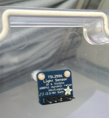

A light sensor is integrated into the transparent lid of the waterelf and records light levels in lux.

We use a breakout board by Adafruit for the TSL2591 sensor (details here). The sensor has a very wide response range from total darkness through to intense sunlight (datasheet).
The light sensor is connected to the waterelf via I2C, with an address of 0x29.